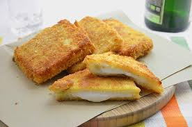

Mozzarella in Carrozza Recipe

Description
A crispy fried sandwich with melted mozzarella inside — a classic Italian comfort food, perfect as a snack or appetizer.
Ingredients
- 8 slices white bread (crust removed)
- 200 g fresh mozzarella, sliced and drained
- 2 large eggs
- 1/2 cup milk
- 1/2 cup all-purpose flour
- Salt & pepper to taste
- Vegetable oil for frying
Steps
- Place mozzarella slices between two bread slices; press edges gently.
- Whisk eggs, milk, salt, and pepper in a shallow bowl.
- Lightly coat sandwiches in flour.
- Dip in egg mixture, ensuring all sides are covered.
- Heat oil in a pan over medium heat.
- Fry sandwiches until golden and crisp on both sides.
- Drain on paper towels; serve hot.
Home